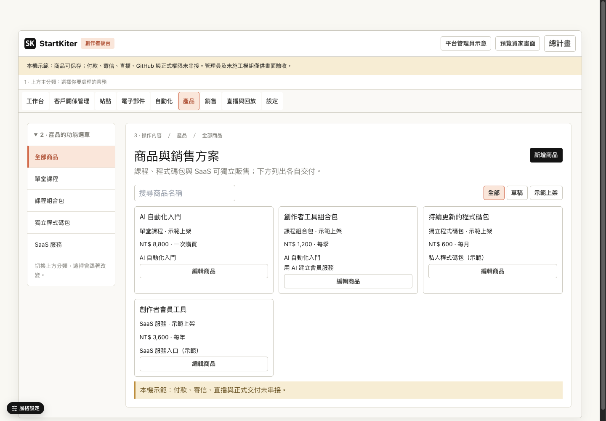

目前只有部分原型

三種角色＋商品操作已有；其他營運頁目前有通用提案，需要補完整設計。
看已有原型完整UI設計還沒完成；真正網站的新後台也還沒接線。已有原型與正式功能地基會重用，不重做。
原型13/14只代表那張SR，不代表整個UI完成。這張總表排先後，小SR各管自己的程式與驗收。
不把文書、原型、正式程式與雲端验收的checkbox加成產品百分比。M0部分舊雲端gate可保留，不必全部擋M1；M2的角色與隔離環境前置不能跳過。
三張全勾卡已唯讀審核：優惠券缺停用UI與權限契約；買家旅程有role／reader／per-course access與部署證據落差。新增3＋4個補償待辦，舊[x]保留。歷史QA封存完整方案待確認，未執行。
creator-platform-delivery-master
總表每张卡都有去向、证據和剩餘，不是假封存。
已有部分三角色與商品原型，但完整畫面矩陣、各頁list/detail/form与適用狀態沒有全部畫完。
creator-ui-ux-design-completion · 0/9
同一Demo入口驗三角色、主／子選單、正常／空／錯／成功／返回，1440／390都有實體證據。
重用既有resolveNavigation／manifest／guards；新版兩層render未接真正App。先核對canonical role矛盾、route owner與隔離環境。
creator-authenticated-shell-integration · 0/7
HTTP localhost真測試帳號登入看到新版後台，原課程／preview不壞；file Demo切role不算。
原sales的CourseOffer/API已有，先核實舊tasks，再接新表單，不同批重建四類商品資料庫。
原public-multi-course-sales-and-code-package
真隔離DB新增一個課程方案→保存→登出登入→可讀可改。localStorage不算。
重用多課、Bundle、LINE／GitHub地基；付款、退款及其它有效grant要真驗。只是合併驗收批次，不合併資料真相。
原sales＋buyer-bundle＋旅程；launch管部署證據
sandbox合法付款→指定內容→refund資格重算；Demo取得不能代替server grant。
newsletter有render/audience/send engine要更新清單不重寫；CRM、live、AI與通用商品、買家更新另按scope小SR。Oracle暫存不阻擋UI。
原newsletter與後續候選小SR
每個獨立能力有入口、主控review、provider／資料權限與rollback證據。

三種角色＋商品操作已有；其他營運頁目前有通用提案，需要補完整設計。
看已有原型M1看完整UI／UX；M2登入真正localhost網站看後台；M3真DB保存重登可改。以後回報一定說是哪一個M，不再籠統說「本機完成」。
現在能看部分原型。M1是下一批，完整matrix及每列實際畫面/證據通過才交你驗，不按文書日期算。M1首個角色批次60分鐘是估計，完整工時按畫面/狀態清單校正；每30分鐘回報已出現畫面。M2環境和role矛盾未解前不填假日期。
4/4，預覽無delta／warning。完整封存方案待確認，保留findings與截圖；不代表新版UI過關。
9/12：保留9項歷史，加3個補償待辦。缺停用UI、權限語義和DB/workbook邊界證據。
19/23：保留19項歷史，加4個收尾任務。preview文字、role、reader、每課LINE access、部署證據要補。
matrix、shared狀態、owner與前置。
A管理員、B創作者分兩批、C買家；各改自己的view/test。
diff、RED/GREEN、剩餘，不只PASS摘要。
caller／權限／保存、測試、桌面手機。
通過目標／證據／入口；Git与部署分開。
M2只派A新renderer、B回歸tests，主控獨占NavBar/AppWrapper接線。這輪兩個唯讀收尾reviewer已完成關閉；M1/M2寫入worker尚未派出，現在不是全部功能一起開工。
一張總治理SR、兩張小SR、12張舊單去向、3張全勾卡審核、2張補待辦；無程式/資料破壞。
M1完整畫面、M2正式新殼、M3真DB表單尚未施工；Git未提交推送，未部署或扣款。
總SR與兩小SR analyze無finding；孩子validate通過。總表no-spec的無delta提示是預期，不當工程已驗。
總SR creator-platform-delivery-master有10個治理/審核gate；M1 creator-ui-ux-design-completion有9項，M2 creator-authenticated-shell-integration有7項。依提案流程暫存，啟動時主控恢復，不叫你操作CLI。
原mock測試不證明真付款、寄信、DB或雲端rollback。封存只用Spectra preview核准後core transaction，不用mark-tasks-complete或skip-specs蒙混。沒有取消未完成需求；M5保留未來所有功能。